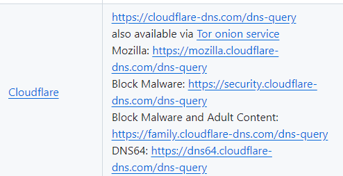

| Ник | Пост | Дата |
|---|---|---|
| Nerimity | Всегда использовал Cloudflare, но наткнулся ещё на какой-то COMMS-DNS - Comss.one DNS - Безопасные DNS-серверы Ну и вообще даже в самом браузере уже встроено есть несколько других вариантов. Какой лучше использовать? И вообще стоит ли вот этот COMMS рассматривать? Или Cloudflare и есть лучше всего? | 2024-12-25T13:46:39.912Z |
| Abyss023 | 2024-12-25T13:49:36.506Z | |
| Nerimity | Ну тут их много - Какой вы используете? Какой на ваш взгляд лучше? | 2024-12-25T13:51:07.877Z |
| KDS | comss нужен для доступа к некоторым ресурсам, заблоченным с той стороны и не заблоченным РКН. То есть с условной инстой он не поможет. Но на чатгпт вроде можно через него пройти | 2024-12-25T13:55:38.963Z |
| Nerimity |
Ну тут вы чё-то намудрили конечно. Ввёл я именно этот адрес и положил себе интернет в браузере. *А почему именно такой кстати? | 2024-12-25T14:08:19.130Z |
| KDS | Ничего я не мудрил СпойлерПотому что не использует SNI и не может быть по нему заблочен. Просто потому что ) | 2024-12-25T14:52:51.767Z |
| Nerimity | Ну у меня не работает. | 2024-12-25T14:54:56.054Z |
| souvenir |
Проверено, работает. | 2024-12-25T15:59:49.547Z |
| souvenir |
 | 2024-12-25T16:02:28.935Z |
| arinoki(Arinoki) | Я использую dns over https3 от controlD. (это штука ещё новее, чем dns over quic). Закономерно, нативно нигде не поддерживается, пользуюсь на Windows клиентом YogaDNS, не уверен что даже Simple DNSCrypt поддерживает. | 2024-12-25T19:37:49.717Z |
| slq | Вопрос не касаемо 1.1.1.1/dns-query, а в целом провайдер все равно же видит на какой сайт заходит юзер по домену? За счет отправки SNI Client Hello через tls v1.2, 1.3, если сайт не поддерживает ECH | 2024-12-25T19:38:21.562Z |
| Dimenshn |
да | 2024-12-26T13:34:35.288Z |
{kind=link}